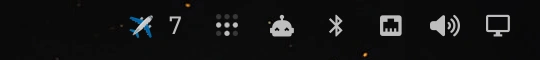

linuxbren
Retro-styled tools for Omarchy. Terminal-native, theme-aware, no chrome.
flyover-pill
flyover-pill

An ambient aircraft-count widget for your Omarchy bar — always visible, always current. It runs flyover underneath: left-click opens the live radar scope in a terminal window, right-click toggles flyover's screensaver on or off. The pill itself draws nothing on its own — every number and every pixel it shows comes straight from the flyover binary.

omarchy plugin add https://github.com/linuxbren/flyover-pill.git --enable
omarchy bar put bren.flyover --section right
flyover
flyover
v0.2.0

A real-time ADS-B radar scope, in your terminal. Live aircraft positions from adsb.lol, rendered as an old-school radar sweep — range rings, fading comet trails, per-contact data tags. Reads your live Omarchy theme colors, so it always matches whatever theme you're running.
Also runs as a genuinely native Omarchy screensaver — the same live scope taking over your idle screen instead of a terminal window, mirroring whichever render mode you're already using. See the screensaver docs for setup, or flip it right from the bar widget above.
cargo install flyover
Needs a location set via Omarchy's omarchy-weather-location first.
What's next
terminal colony sim
A Factorio/Satisfactory-flavored automation game rendered in the terminal, re-skinning itself live to match your Omarchy theme.
wireframe flight sim
A vector-wireframe aircraft flying over real elevation data (SRTM), rendered in the same glowing CRT style as flyover.